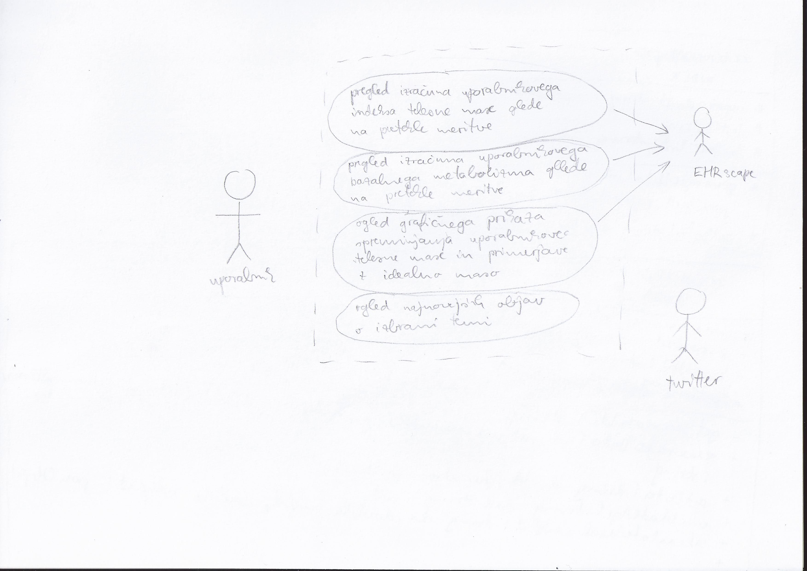
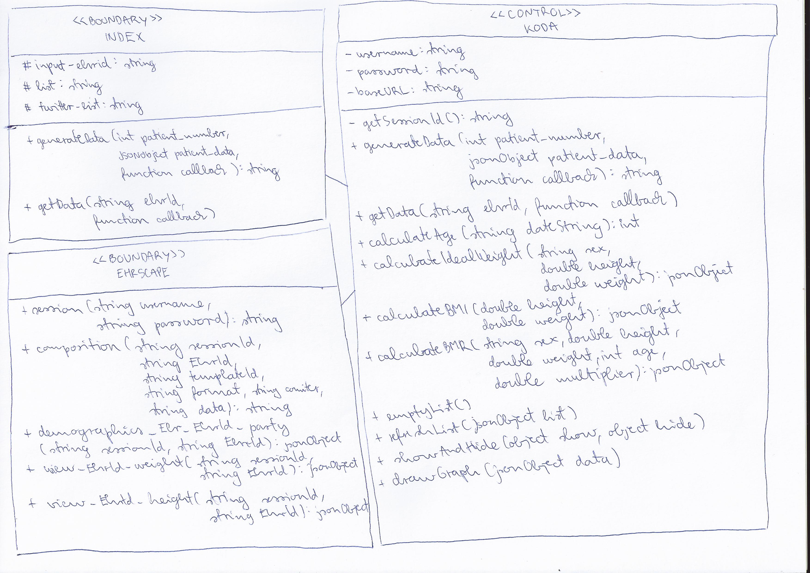

Diagram primerov uporabe
TO-DO: Na tem mestu je potrebno dodati 1 diagram primerov uporabe (DPU), ki mora vsebovati vsaj 2 primera uporabe, ki jih vaša aplikacija podpira. Pri tem ne pozabite identificirati vseh akterjev, ki vaš sistem uporabljajo in zunanjih virov, do katerih vaš sistem dostopa.
Diagram lahko pripravite s pomočjo orodja Lucid Chart ali ga narišete na papir in ga slikate ter oddate kot sliko.
Razredni diagram
TO-DO: Na tem mestu je potrebno dodati 1 VOPC razredni diagram, ki mora vsebovati načrt vseh razredov, ki jih bo vaša aplikacija implementirala (t.j. vsaj funkcionalnosti datotek index.html, koda.js in API platforme EhrScape (vključite le tiste metode, ki jih vaša aplikacija uporablja)).
Diagram lahko pripravite s pomočjo orodja Lucid Chart ali ga narišete na papir in ga slikate ter oddate kot sliko.
Diagram zaporedja
TO-DO: Na tem mestu je potrebno dodati 1 diagram zaporedja, ki mora predstavljati podrobno implementacijo osnovega toka dogodkov ene izmed vaših glavnih funkcionalnosti, ki ste jo identificirali na primeru uporabe (glej diagram primerov uporabe).

Diagram lahko pripravite s pomočjo orodja Lucid Chart ali ga narišete na papir in ga slikate ter oddate kot sliko.